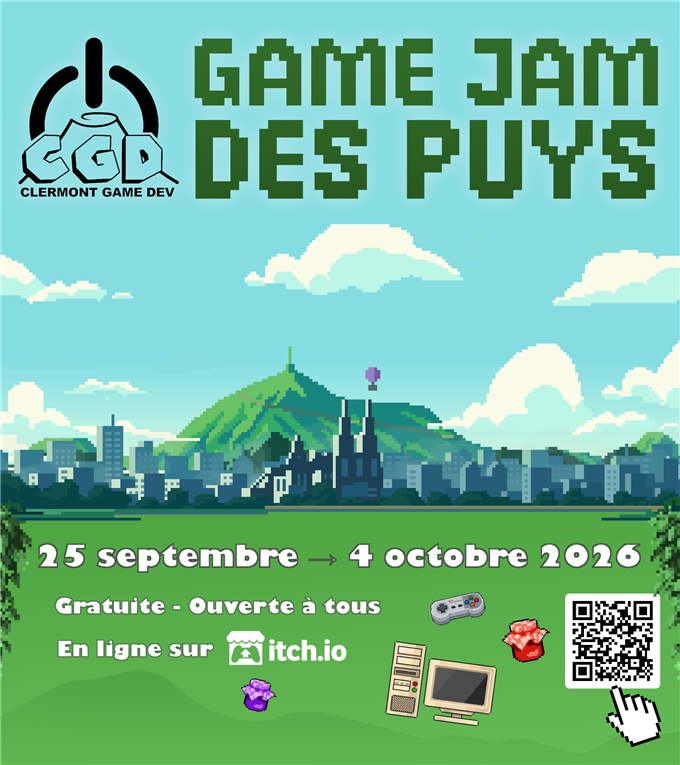
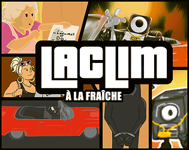
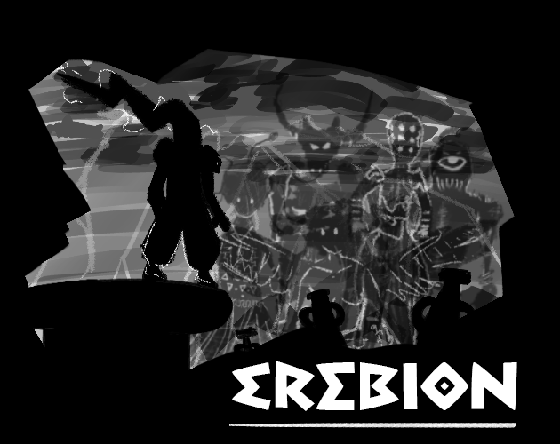

Le but pour les participants est de créer un jeu vidéo ou de société sur un thème, en équipe, pendant un week-end.
Chacun doit alors faire preuve d'organisation, d'imagination et de passion.
Ouvert à tous : pro ou amateur, artiste ou développeur, tous les outils sont permis. La seule compétence requise est l'envie !
Pour ne pas manquer la prochaine game jam, rejoignez notre Discord !

Format : Distanciel
Dates : Du 25 septembre au 4 octobre 2026
Thème : Canicule
Plus d'info : lien itch.io

🥇 LACLIM - À La Fraîche Runthia, kootoapin (@Xcaliburnss), Piou San, Bastard "Keromas" Gabin et agamar
🥈 Canicule Ducourtz
🥉 Soleil de Plomb Natrem
4️⃣ Night Vent estona815
Format : Distanciel
Dates : Du 05 Novembre au 12 Novembre
Thème : Mythologie
Plus d'info : lien itch.io

🥇 EREBION Bastard "Keromas" Gabin, agamar, kootoapin, leonc_e, Mandarine Holfgrane, Volcani0, WillyTheCrow
🥈 Mything Cularo Games, RodZilla, Tilca Music, Cassariel, sisimonis, ChooChooRayk, Mesh_Manticore
🥉 Overwhellmed Clothilde Arlaut, ShapapK, Runthia, Jeanneuh, Tarmunds, Siltaire